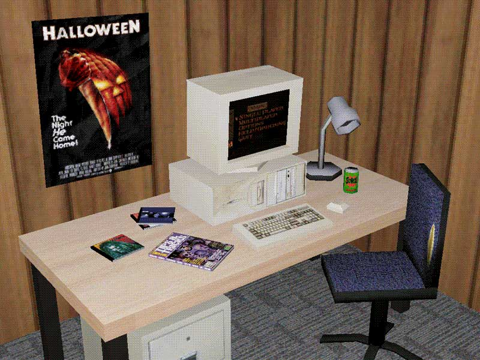
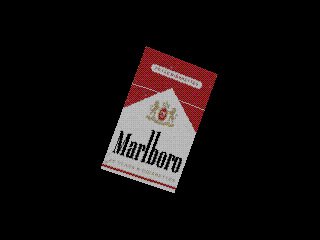
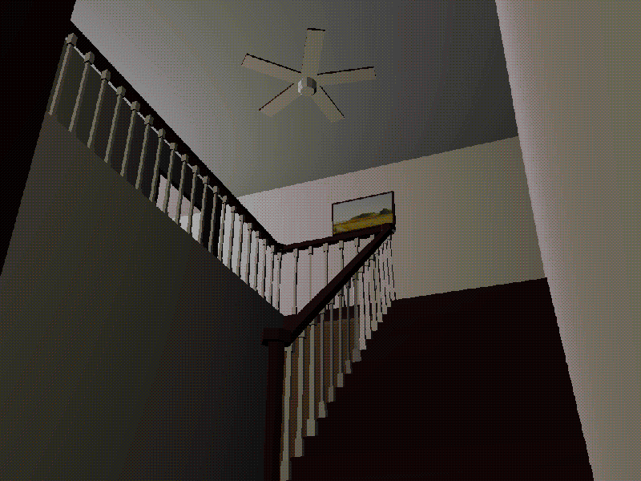

← Return to Homepage — Item Render

Item Render
I've been learning how to make low-poly 3D models in my spare time. I'm going for the PS1 aesthetic (or something in that ballpark). High dithering, vertex wobble — the whole nine yards. I'm using Blender and Photoshop to make these and almost everything I know, I've learned from The Sickly Wizard on YouTube.



Project Core Values
Low-Res ✦ Low-Poly ✦ Low-Brow
Social Media Links
01. Item Render on Tumblr ↗
02. Showreel on YouTube ↗
03. Sketchfab Profile ↗
References
01. Blender is free! ↗
02. TheSicklyWizard Tutorials ↗
03. PlayStation Analysis ↗
Notes on these graphics
01. Identify the CDs for bonus points.
02. Taco Bell is the best fast food.
03. I don't smoke, but cigs look cool.
04. The stairs are from Twin Peaks ↗.